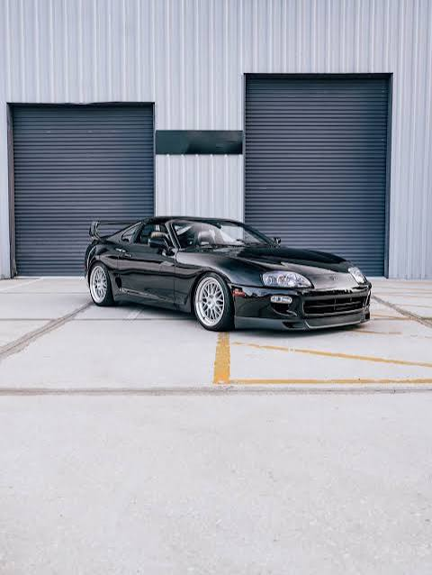

Desenvolvimento Web I
Como uma página de perfil tornou-se um Portal de Noticias
Estrutura, semântica, páginas e links internos.

Na primeira aula, criamos uma página de perfil. Agora, essa página fará parte de um portal de coteúdos sobre programação, Hobbies e informações pessoais.
Para organizar o conteúdo, utilizamos as tags: header, nav main, section, article e footer